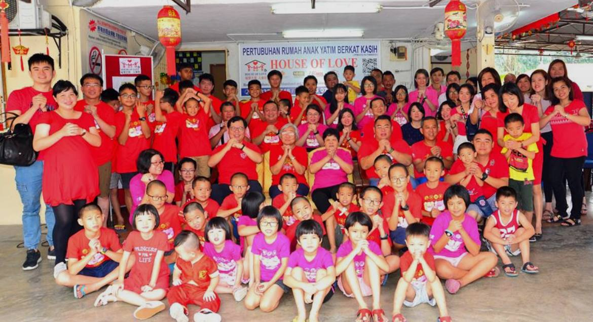
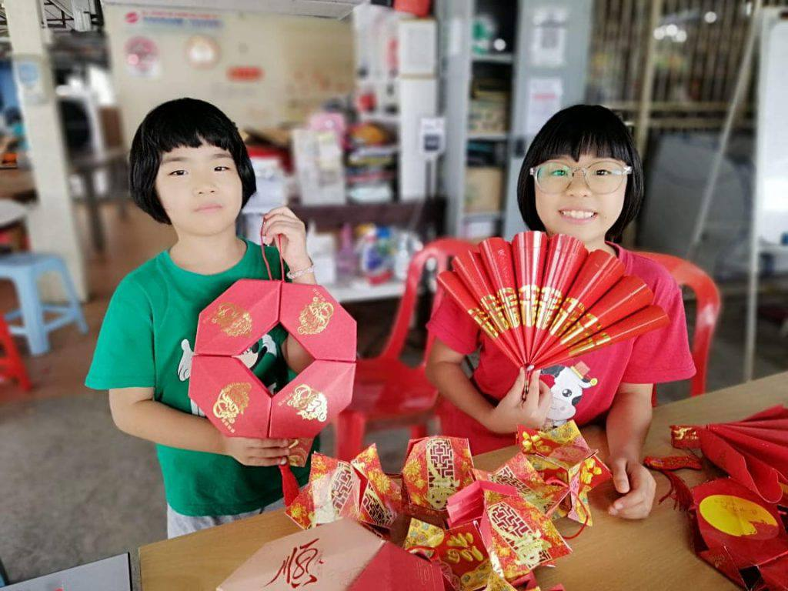
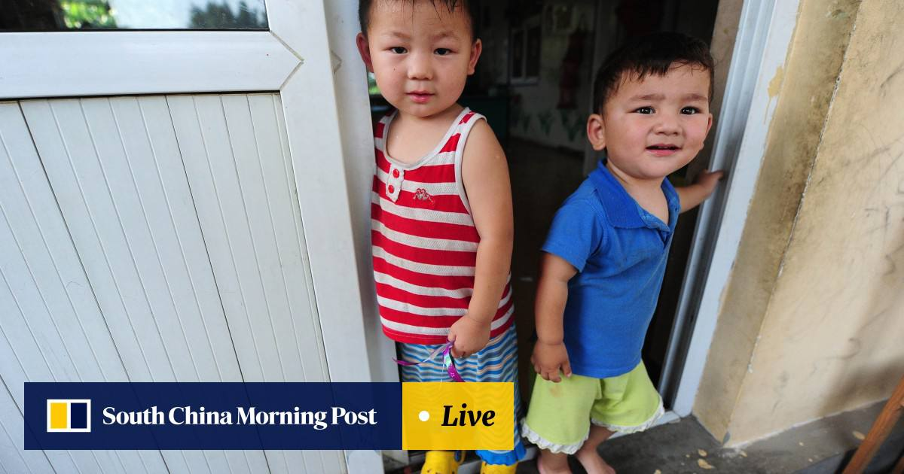

|
ABOUT HOUSE OF LOVE
House of Love is a Charitable and Christian Organization Children Home for the orphans, abandoned, abused, and neglected children. Its aim is to provide physical, spiritual, mentally, socially and educational well-being of these children. The home is located at No. 14, Lebuh Bagor KS/01, Taman Petaling Indah, 41200 Klang, Selangor.
House of Love is governed by a board of committee members of different professional background. These committee members are committed to the local community services. The home is also in good standing with the Klang Social Welfare Department and we have their blessing to operate the home.
We feel very proud because we have almost 1000++ volunteers are working around the world House Of Love is a house for the homeless children (orphans, loss of the parents). Love for the unloved children (careless parents, abused). Security for the abandoned, neglected children (abandoned).
It is our priority and utmost concern to make sure that these children living in a loving family like environment. Children are flourishing in this loving home, where the caring caretakers educate, love and raise them to become future leader for their generation.
WHO WE ARE
We are a non-profit initiative dedicated to supporting orphaned and underprivileged children.
WHAT WE DO
We provide accommodation, education support, healthcare and emotional guidance.